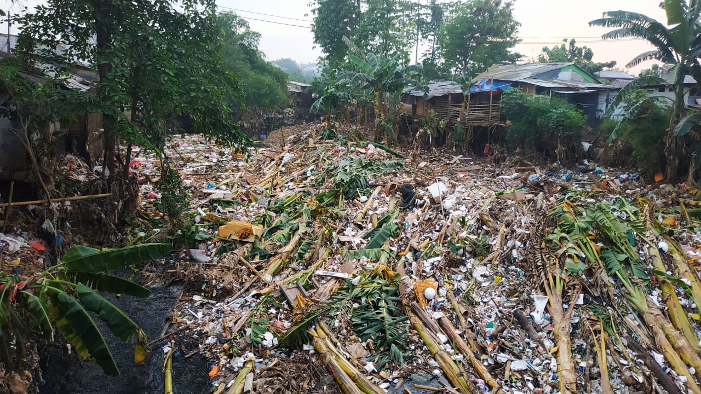

SAMPAH merupakan masalah yang dihadapi hampir seluruh Negara di dunia. Tidak hanya di Negara negara
berkembang, tetapi juga di
negaranegara maju, sampah selalu menjadi masalah. Rata-rata setiap harinya kota-kota besar di Indonesia
menghasilkan puluhan ton sampah.
Sampah-sampah itu diangkut oleh truk-truk khusus dan dibuang atau ditumpuk begitu saja di tempat yang sudah
disediakan tanpa apa-apakan lagi. Dari hari ke hari sampah itu terus menumpuk dan terjadilah bukit sampah
seperti yang sering kita lihat. Sampah yang menumpuk itu, sudah tentu akan mengganggu penduduk di sekitarnya.
Selain baunya yang tidak sedap, sampah sering dihinggapi lalat. Dan juga dapat mendatangkan wabah penyakit.
Sampah berasal dari rumah tangga, pertanian, perkantoran, perusahaan, rumah sakit, pasar, dsb. Secara garis
besar, sampah dibedakan menjadi:
Sampah Organik
Sampah organik adalah sampah-sampah yang basah, sampah ini berasal dari sampah dapur, sisa-sisa makanan,
buah-buahan, sayur-sayuran dan lain-lain yang dapat mengalami pembusukan secara alami.
Sampah Anorganik
Sampah anorganik adalah sampah-sampah yang kering. Sampah ini berasal dari logam, besi, kaleng, plastik,
karet, botol, dan lain-lain yang tidak dapat mengalami pembusukan secara alami.
Sampah Berbahaya
Sampah ini adalah sampah-sampah berbahaya seperti baterai, botol racun nyamuk, jarum suntik bekas, dan
lain-lain.
1.2 Penyebab sampah
Sebagian sampah akan hancur dan sebagian lagi tidak mudah hancur. Sebuah keluarga yang memasukan sampah-sampah
plastik kedalamnya membuat tanah menjadi tercemar (terpolusi). Sampah dapat membawa dampak yang sangat buruk
bagi kesehatan masyarakat apabila tidak dapat ditanggulangi. Jika sampah tersebut dibuang sembarangan atau
ditumpuk tanpa adanya pengelolaan yang baik, maka akan menimbulkan berbagai macam masalah kesehatan yang
terjadi di lingkungan masyarakat. Sebagian dari kita pun tidak menyadari bahwa setiap hari terjadi penumpukan
sampah baik sampah yang organik maupun sampah yang anorganik. Perlu diketahui bahwa banyak penyebab yang
diakibatkan dari manusia dalam membuang sampah secara sembarangan.
- Didalam pikiran sbagian masyarakat pada umumnya menganggap bahwa membuang sampah sembarangan ini bukanlah
hal yang salah dan wajar untuk dilakukan
- Seseorang akan melakukan suatu tindakan yang dirasa mudah untuk dilakukan. Jadi, orang tidak akan membuang
sampah sembarangan jika tersedianya banyak tempat sampah.
- Tempat yang kotor dan memang sudah banyak sampahnya tempat yang asal mulanya terdapat banyak sampah, bisa
mmbuat orang yakin bahwa membuang sampah sembarangan diperbolehkan ditempat tersebut. Jadi, warga sekitar
tanpa ragu untuk membuang sampahnya ditempat tersebut.
1.3. Akibat dari pembuangan sampah
Sampah-sampah yang berserakan, terutama pada tumpukan sampah yang berlebihan dapat menyebabkan pertumbuhan
organisme-organisme yang membahayakan, mencemari udara, tanah dan air. Sehingga dampak tersebut dapat
menyebabkan cukup banyak masalah bagi manusia dan lingkungan. Antara lain:
- diare, kolera, dan tifus menyebar dengan cepat karena virus yang berasal dari sampah dengan pengelolaan
tidak tepat dapat mencemari air tanah yang biasa diminum masyarakat. Pennyakit DBD (demam berdarah) dapat juga
meningkat dengan cepat di daerah dengan pengelolaan sampahnya yang tidak memadai.
- sampah yang dibuang begitu saja berkontribusi dalam mempercepat pemanasan global, karena sampah dapat
menghasilkan gas metan (CH4) yang dapat merusak atmosfer bumi. Rata-rata tiap satu ton sampah padat
mengahsilkan 50 kg gas metan.
- sampah dapat menyebabkan banjir. Sampah yang dibuang ke sembarang salah satunya ke sungai atau aliran air
lainnya. Lama kelamaan akan menmpuk dan menyumbat aliran air, sehingga air tidak dapat mengalir dengan lancar
dan meluap menyebabkan banjir.
1.4. Cara mengatasinya
Namun, meskipun terbukti sampah itu dapat merugikan,
sampah juga dapat diubah menjadi barang yang
bermanfaat dengan cara di daur ulang. Untuk meminimalisasikan dampak dari sampah, sampah yang dibuang harus
dipilah, sehingga tiap bagian dapat dikomposkan atau didaur-ulang secara optimal, daripada dibuang ke sistem
pembuangan limbah yang tercampur seperti yang ada saat ini. Selain itu industri-industri juga dihimbau untuk
mendesain ulang produk-produk, untuk memudahkan proses daur ulang produk tersebut.
Berikut adalah prinsip-prinsip yang bisa diterapkan dalam pengolahan sampah. Prinsip-prinsip ini dikenal
dengan nama 4R, yaitu:
- Mengurangi (bahasa Inggris: reduce)
Sebisa mungkin meminimalisasi barang atau material yang kita pergunakan. Semakin banyak kita menggunakan
material, semakin banyak sampah yang dihasilkan
- Menggunakan kembali (bahasa Inggris: reuse)
Sebisa mungkin pilihlah barang-barang yang bisa dipakai kembali. Hindari pemakaian barang-barang yang sekali
pakai, buang (bahasa Inggris: disposable).
- Mengganti (bahasa Inggris: replace)
Teliti barang yang kita pakai sehari-hari. Gantilah barang-barang yang hanya bisa dipakai sekali dengan barang
yang lebih tahan lama.
- Mendaur ulang (bahasa Inggris: recycle)
Sebisa mungkin, barang-barang yang sudah tidak berguna didaur ulang lagi. Tidak semua barang bisa didaur
ulang, tetapi saat ini sudah banyak industri tidak resmi (bahasa Inggris: informal) dan industri rumah tangga
yang memanfaatkan sampah menjadi barang lain
Berikut adalah poin-poin penting dalam pengelolaan sampah dan rangkaian pembuangan sampah yang ideal:
Pemilahan
Pemilahan dari sumber dihasilkannya sampah yang terdiri dari sampah organik dan anorgainik
Pemilihan sampah yang masih memiliki sumber energi tinggi
Pemanfaatan kembali sampah yang memiliki resourcesbernilai tinggi.
Daur Ulang
- Contoh kegiatan daur ulang adalah antara lain adalah :
- Pemanfaatan kembali kertas bekas yang dapat digunakan terutama untuk keperluan eksternal
Plastik bekas diolah kembali untuk dijadikan sebagai bijih plastik untuk dijadikan berbagai peralatan rumah
tangga seperti ember
- Peralatan elektronik bekas dipisahkan setiap komponen pembangunnya (logam, plastik/kabel, baterai dll) dan
dilakukan pemilahan untuk setiap komponen yang dapat digunakan kembali
- Gelas/botol kaca dipisahkan berdasarkan warna gelas (putih, hijau dan gelap) dan dihancurkan
Biogas
Sampah organik sebagian diolah dengan alat digestersebagai energi (gas bio).
Pemanfaatan gas bio antara lain untuk district heating, energi listrik, dan kompor untuk memasak
Namun pada kenyataannya, Cara pengendalian
sampah yang paling sederhana dan efektif adalah dengan menumbuhkan kesadaran dari dalam diri sendiri untuk
tidak merusak lingkungan dengan sampah. Selain itu diperlukan juga kontrol sosial budaya masyarakat untuk
lebih menghargai lingkungan. Peran Pemerintah dalam hal ini juga sangat diperlukan, dengan peraturan-peraturan
dan sangsi-sangsi yang ada, diharapkan bisa meminimalkan perusakan lingkungan oleh pihak-pihak yang tidak
bertanggung jawab.
Sumber berita : http://pitrotentacle.blogspot.co.id/2015/01/artikel-tentang-sampah.html